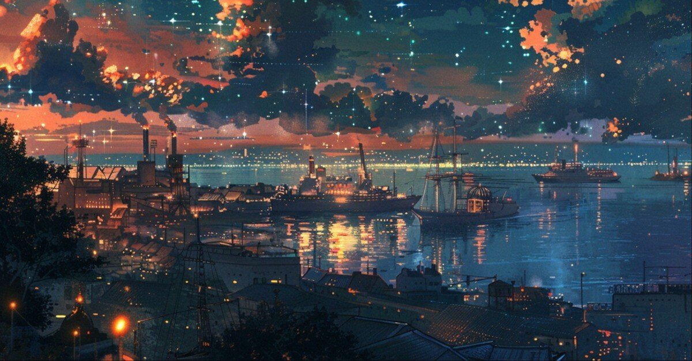

名前は、最後にしか残らない。だから最後の仕事というのは地味なものだ。色を剥がして、ただ名前だけを置いていく。
夜の港湾ビルは、まだ何も知らない顔で立っていた。昨夜の雨が手すりに薄く残り、非常階段の踊り場には、誰かが何度も往復した靴底の黒が擦れている。僕はその黒を見下ろし、コーヒーの缶を一本、階段の角に置いた。
「来ると思うか？」
才奨が壁にもたれて言う。今日は珍しく眠そうではない。獲物が見えている時の顔だ。
「自分の角度に惚れる人間は、最後だけは必ず見に来るものだよ」
「ナルシストの習性ってやつか」
「ただの職業病だ」
踊り場の窓から港が見える。青はまだ姿を見せない。噂になるには、少し早い色だった。
その時、スマホが震えた。短い文面。
《二十一時 階段 三階と四階の間》
差出人の名前はない。だが、今日まで、と言っていた若者は、約束だけは守る背中をしていた。
才奨が僕の手元を見て、短く笑う。「港の子、真面目だな」
「止まるタイミングを知ってる」
「それ、だいぶ救いだろ」
「救いは大体、遅れてやってくるもんだからね」
階下で扉の開く音がした。乾いた足音と、ためらわない歩幅。けれど、踊り場の手前で少しだけ速度が落ちる。見られる側の呼吸ではない。見る側の呼吸だ。
ある男が現れた。作業着ではなく、地味なコート。帽子もない。顔は平凡で目だけがよく動く。港の風より、カメラの位置に慣れている目だった。
「呼び出しとは、ずいぶん趣味が悪いですね」
男は言った。声は低く、滑らかで、誰かに教えることに慣れている響きがある。
僕は缶コーヒーを指で押した。「先生、と呼ばれているそうですね」
男の視線が一度だけ止まる。その止まり方が、動揺の色を見せる。
才奨が横で肩をすくめる。「安心してください。今日は観客少ないんで」
「何の話です？」
「港の青い幽霊の話」僕は笑った。「正確には、あなたが切り売りしていた“角度”の話です」
男は黙ったまま、踊り場の窓を一瞥した。逃げ道を見ているのではない。映り込みを見ている。最後までそういう人だった。
「最初に変だったのは、火そのものじゃない」
僕は手すりに指を置いた。黒い粉が、わずかに指先へ移る。
「配線の焼け方は小さかった。酸を垂らして、ためらいながら舌を出させた。右利きの素人。封印テープも貼り直しが雑で、机の脚にも酸の傷があった。——あれは壊すための火じゃない。始めるための火だ」
「始める？」
「噂を、です」と才奨が言う。
「そして保全事務所への出入りを“仕事”に見せるための火。ついでに、防犯カメラの角度変更も事故対応の流れに紛れ込ませる。美しくはないが、よく出来てる」
僕は続ける。
「青い布は安いポリエステル。劇団倉庫にあった無地の青いポンチョと同系統。二コマだけ裾が鋭かったのは、コートじゃなく、上から被せた薄いカバーだから。証言の身長がバラバラだったのも同じです。“青い女”は一人じゃない。小柄な女の子がやる時もあれば、若い男がやる時もあった。姿勢と光で、背丈はいくらでも変わる」
「白い手袋もな」と才奨が笑う。
「医療っぽい、不安と安心が同時に来る白。実際はただの清掃用ゴム手袋。匂いまで演出に使うあたり、先生、舞台上がりでしょ？」
そこで初めて、男の眉がほんの少しだけ動く。
「……想像が過ぎますね」
「想像じゃない」僕は首を振る。
「劇場で照明か舞台監督をやっていた。だから光の拾い方を知ってる。人がどの角度で“何か見た気になるか”も知ってる。そのあと、防犯設備の保守に移った。カメラの角度、非常階段の死角、サービス口のカード運用。あなたにとってこの街は、ただ舞台が広くなっただけだ」
踊り場に、短い沈黙が落ちた。
下の階で扉が開く音がする。総務課長と制服の硬い気配。けれど誰も上がってこない。きっと僕らの趣味を知って、少し待ってくれているのだろう。
男は小さく息を吐いた。
「それで？ 舞台監督が青いポンチョを買って、若い子に芝居をさせたとして。それが何になる？」
「売り物になる」僕は言う。「角度が」
男の目が、今度ははっきりとこちらを見た。
「電話ボックスで渡していた薄い紙。あれはラブレターでも脅迫状でもない。港と町の間を抜ける導線、監視の死角、灯りの癖、見張りの交代時刻。あなたは“見えるものを作る”若者たちを使って、別の場所で“見えないもの”を売っていた。買うのは、盗みに入ったり倉庫を掠める連中だ」
才奨が付け足す。
「『角度は売り物だ』って、やっとわかった。噂も港も角度でできている。で、あんたはそれを商品にした」
男は笑わなかった。だが否定もしなかった。
「次の本番は、四号倉庫だった」
僕がそう言うと、男の右手がかすかに動く。爪の先、黒ずみ。港の機械油ではない。非常階段の手すりに染みついた街の黒。
「保険査定が近い。連携記録が動く。カードが一枚複製できれば、夜の三分だけ誰かが中に入れる。その三分のために、小さい火を出し、青い噂を流し、電話ボックスで角度を配った」
「証拠は」
男はようやく言った。声音だけが少し乾いている。
「いくつもある」才奨がポケットから封筒を出す。
「偽カードを受け取るあんたの写真。十字テープの中央を踏んで、自分の足元を見た無防備な顔。電話ボックスの三十秒。あと、若い子の証言」
「それと」僕は缶コーヒーを持ち上げた。
「あなたは最後まで港を信じすぎた。若い連中は、あなたほど港に惚れていない。だから止まれる」
男の喉が、ほんの少しだけ動いた。
「……あの子らは、装置じゃない」
僕は言った。
「あなたはそこを間違えた。舞台は人で回る。でも人は舞台じゃない」
総務課長が上がってきた。後ろに二人。制服の靴音は正直で、港の噂よりずっと扱いやすい。
男はただ、窓の外を一度だけ見た。観覧車の輪郭が次第に夜へ寄っていく。
「先生」
と、下の階から小さな声がした。僕らは振り向かなかった。振り向かなくても、それが誰の声かはわかる。足音が軽く、歩幅が短く、港の外では青を疑ってしまうあの子だ。
男も振り向かなかった。
それでよかったのだと思う。
制服の人たちに囲まれた男の背中は、どこか薄かった。青を剥がされた人間は少しだけ小さく見える。
才奨が隣で息を吐く。
「ラーメン行くか」
「まるで情緒がない」
「満点のスープが必要な事件だったろ？」
踊り場の窓から橋の上が見える。小さな背中が町の方へ歩いていく。隣にあの男はいない。青い布も、白い手袋もない。ただ、冬の風だけが、律儀に横から吹いていた。
夜、僕らはラーメンの代わりにル・モンドでコーヒーを飲んだ。マスターは何も聞かず、いつものカップを置く。焦げに似た香りが最初の現場を思い出させたが、今日はもう苦くない。
「結局、青い幽霊はいなかったな」
才奨が言う。
「いた方がロマンはあったのかもしれない」
「幽霊にロマンが作れるのか？」
「ロマンチストの世界も広いからな」
才奨は少し考えて、それから黙ってサンドイッチを半分寄越した。
観覧車が白から青へ変わる、その少し手前の色を見た。名前を持つ前の青。誰の嘘にも、誰の商売にも、まだなっていない色。ああいう色なら、まだ好きだと思えた。
港は冬になると生真面目になる。その現象にも、きっと名前もなにもない。
でも、その中に“青”は確かにあった。ふと名前をつけようとも思ったが、深夜のサンドイッチは太りそうだなと、頭の片隅ではそんなちっぽけなことを考えている。(了)